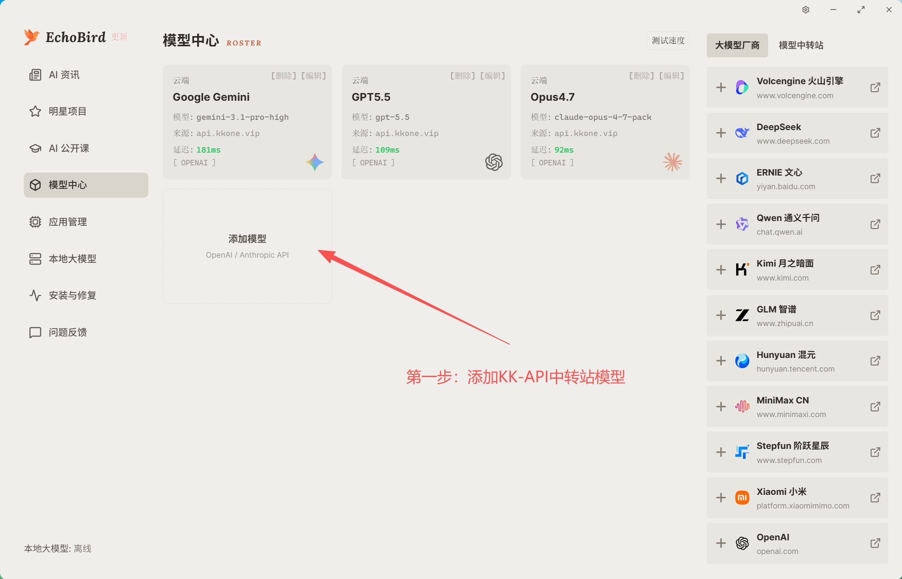
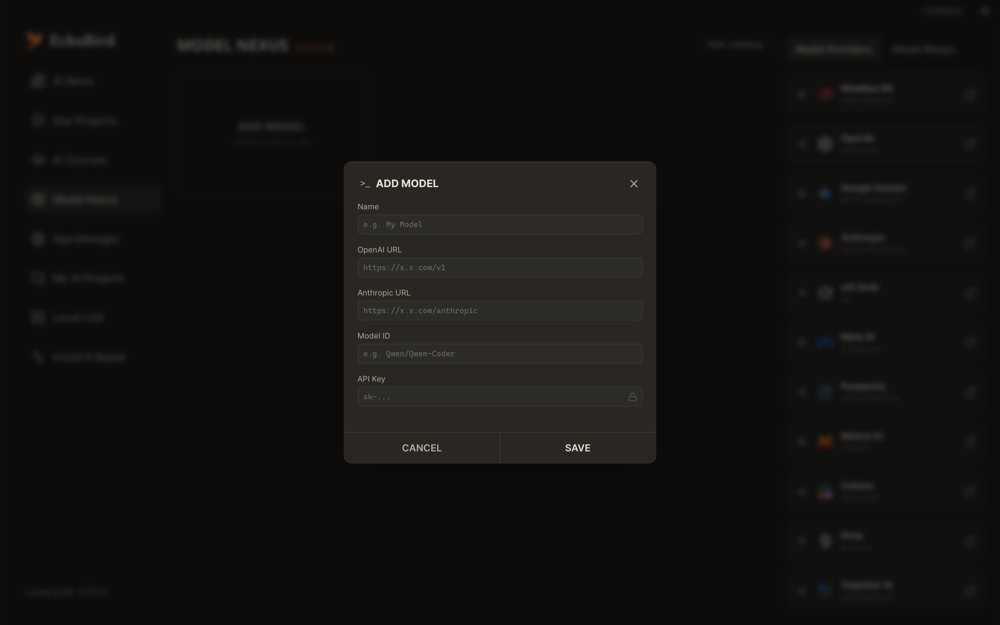
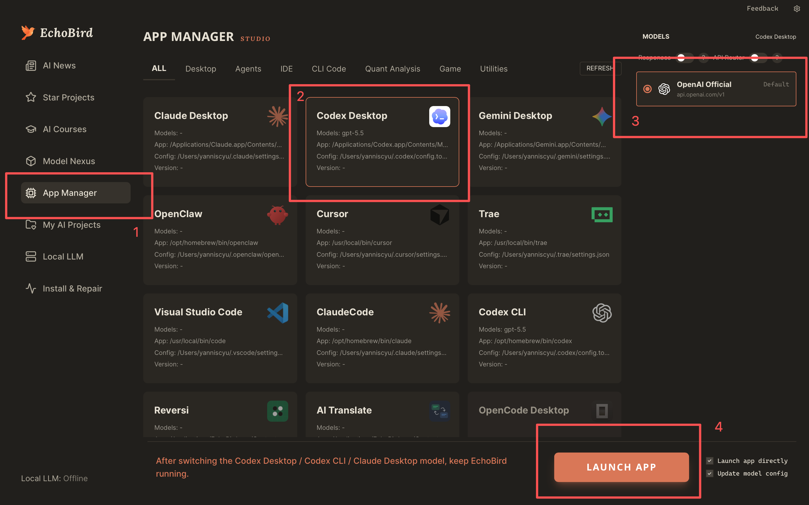

Mac Apple 芯片版
M1、M2、M3、M4 等 Apple Silicon 设备。
下载 DMG SHA-256: 915c63f5074392188bd91d52ca93faa1a9251f68875810c08f89c00d164e355b3 步完成：添加模型、填写 API、绑定 Codex。配置后保持 EchoBird 后台运行即可。
先安装 EchoBird，再按下面 3 步配置 Codex。
M1、M2、M3、M4 等 Apple Silicon 设备。
下载 DMG SHA-256: 915c63f5074392188bd91d52ca93faa1a9251f68875810c08f89c00d164e355bIntel 处理器的 Mac 设备。
下载 DMG SHA-256: e79bf45a650f5757340c5cfe71f3ac6b52800996d037fa77ad8db20a6bb4016d64 位 Windows 系统。
下载 EXE SHA-256: cd87130d1691d6884759f78598a75fac08318fda92cd04acfabf0f33f7427425每一步一张大图，照着截图操作即可。
进入 模型中心，点击“添加模型”，选择 OpenAI / Anthropic API 类型。

OpenAI 地址填中转站接口并带 /v1；模型 ID 填模型名；API 密钥填令牌 Key。

进入 应用管理，选择 Codex Desktop，绑定刚添加的模型，然后点击“启动应用”。

填错最多的地方，按这里核对。
https://api.tamgur.tech/v1。把下面内容替换成你自己的中转站信息即可。
名称：GPT5.5
OpenAI 地址：https://api.tamgur.tech/v1
Anthropic 地址：不用可留空
模型 ID：请从模型广场复制
API 密钥：sk-xxxxxxxxxxxxxxxx